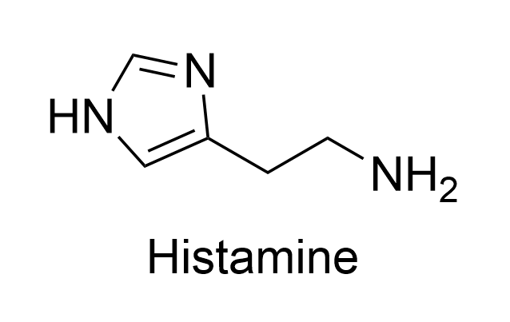
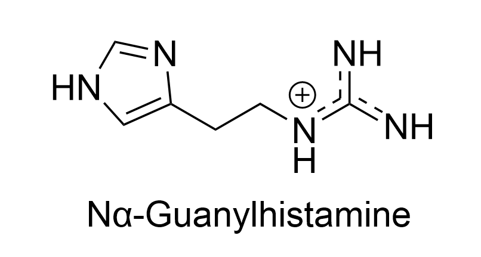

Nα-Guanylhistamine
The first breakthrough in H₂-receptor antagonist development


Nα-Guanylhistamine at a glance
- Discovery: Reported by James Black and co-workers in 1972, was identified as the first H₂-receptor partial antagonist.
- Mechanism of Action: Functions as a partial agonist (pA2=3.9) [12], weakly activates the receptor while competing for the binding site.
- Therapeutic Effect: By blocking histamine from binding, it prevents full receptor activation Only ~0.5% activity of histamine , resulting in a reduction of gastric acid release.
-
Receptor Hypothesis: H₂ receptor contains two distinct binding regions:


- A standard agonist region is accessible by histamine.
- An antagonist region that is "out of reach" for histamine but accessible to Nα-Guanylhistamine.
Key Structural Modification
The Modification
A guanidinium group
Delocalized, permanently protonated cation that strengthens H₂ binding.
 was added to the terminal of histamine, replacing the simple amine group, creating a permanent positive charge at physiological pH.
was added to the terminal of histamine, replacing the simple amine group, creating a permanent positive charge at physiological pH.